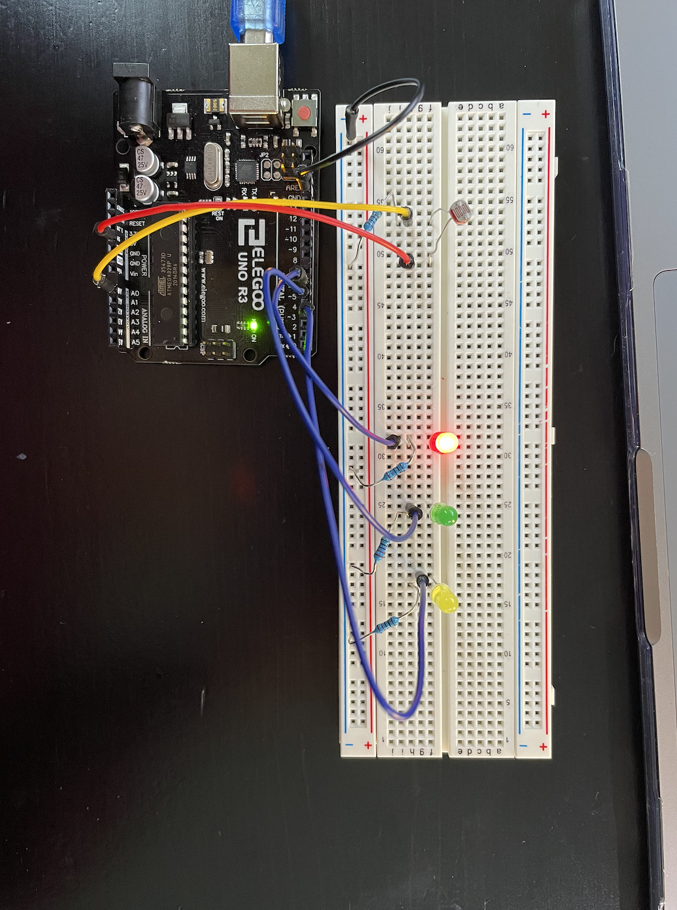

Here is my input output circuit in action!

For this assignment I utilized digitalWrite, analogWrite, and analogRead to create a circuit that turns on a fading LED depending on how much light a photoresistor is receiving.
For this assignment, I created a circuit that responds to how much light a photoresistor is receiving. If the photoresistor is in full brightness, a red LED will turn on and fade. If the photoresistor is receiving some light, a green LED will turn on and fade, and if the photoresistor is in very little light the yellow LED will turn on and fade.
Here is the schematic for my input output setup. I used three LEDs and a photoresistor. To figure out what resistor to use for the LED I used Ohm's law to calculate the resistance needed. For all three LEDs I calculated that the resistance needed was 160 ohms. I replaced the 160 ohm resistor with a 220 ohm resistor, due to what I had available. For the photoresistor, I chose a 1K resistor because I wanted to maximize the range of possible voltages while making sure that I didn't let too much current through. To identify resistor would be best, I took the highest value and lowest value my photoresistor was reading and calculated different voltage outputs using voltage divider formula. The 1k resistor ended up being a good range of voltage output that was easily visible when the brightness changed!
Here is a photo of what my circuit setup looks like.
Here is my input output circuit in action!